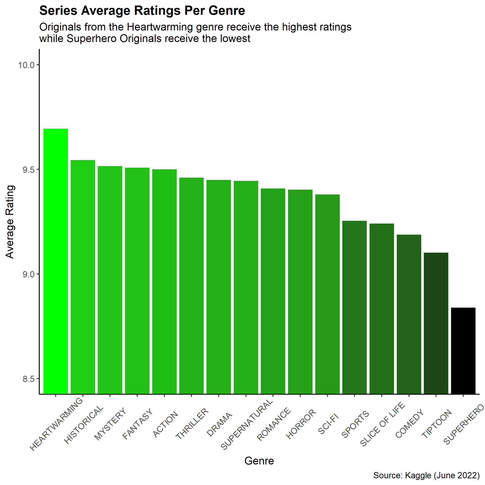

Metrics of Success
Though cut-and-dry figures are not necessarily an indicator of a good WEBTOON, data analysis can identify patterns in Originals that statistically perform well among readers.
The follow metrics of success are compared to variables such as genre throughout this project:
- Number of subscribers
- Rating
Genres and Popularity

Note that the y-axis scale starts at 8.5 to emphasize the rating differences. Average series ratings are about the same for Originals across all genres, with Originals from the Heartwarming genre receiving the highest and Originals from the Superhero genre receiving the lowest.

Romance wins by a landslide! How very romantic of you, WEBTOON readers. Fantasy comes second for number of subscribers, with Action and Drama at a close third and fourth.
Heartwarming ranking last in subscriber-based popularity, despite receiving the highest ratings, makes sense as there are only 2 Originals in the Heartwarming genre. (WEBTOON authors, do you see this unfulfilled market niche? )
Subscribers vs.Ratings
$`_data`
# A tibble: 16 2
genre num
<chr> <int>
1 FANTASY 138
2 ROMANCE 131
3 DRAMA 87
4 ACTION 82
5 COMEDY 61
6 SLICE OF LIFE 54
7 THRILLER 47
8 SUPERNATURAL 42
9 SCI-FI 39
10 SUPERHERO 29
11 HORROR 24
12 MYSTERY 13
13 SPORTS 13
14 TIPTOON 7
15 HISTORICAL 5
16 HEARTWARMING 2
$`_boxhead`
# A tibble: 2 6
var type column_label column_align column_width hidden_px
<chr> <chr> <list> <chr> <list> <list>
1 genre default <chr [1]> left <NULL> <NULL>
2 num default <chr [1]> right <NULL> <NULL>
$`_stub_df`
# A tibble: 16 5
rownum_i group_id rowname group_label built
<int> <chr> <chr> <list> <chr>
1 1 <NA> <NA> <NULL> <NA>
2 2 <NA> <NA> <NULL> <NA>
3 3 <NA> <NA> <NULL> <NA>
4 4 <NA> <NA> <NULL> <NA>
5 5 <NA> <NA> <NULL> <NA>
6 6 <NA> <NA> <NULL> <NA>
7 7 <NA> <NA> <NULL> <NA>
8 8 <NA> <NA> <NULL> <NA>
9 9 <NA> <NA> <NULL> <NA>
10 10 <NA> <NA> <NULL> <NA>
11 11 <NA> <NA> <NULL> <NA>
12 12 <NA> <NA> <NULL> <NA>
13 13 <NA> <NA> <NULL> <NA>
14 14 <NA> <NA> <NULL> <NA>
15 15 <NA> <NA> <NULL> <NA>
16 16 <NA> <NA> <NULL> <NA>
$`_row_groups`
character(0)
$`_heading`
$`_heading`$title
[1] "**WEBTOON Originals per Genre**"
attr(,"class")
[1] "from_markdown"
$`_heading`$subtitle
NULL
$`_heading`$preheader
NULL
$`_spanners`
# A tibble: 0 6
# with 6 variables: vars <list>, spanner_label <list>,
# spanner_id <chr>, spanner_level <int>, gather <lgl>, built <chr>
$`_stubhead`
$`_stubhead`$label
NULL
$`_footnotes`
# A tibble: 0 8
# with 8 variables: locname <chr>, grpname <chr>, colname <chr>,
# locnum <dbl>, rownum <int>, colnum <int>, footnotes <list>,
# placement <chr>
$`_source_notes`
$`_source_notes`[[1]]
[1] "*Kaggle Dataset (iridazzle, 2022)*"
attr(,"class")
[1] "from_markdown"
$`_formats`
list()
$`_styles`
# A tibble: 0 7
# with 7 variables: locname <chr>, grpname <chr>, colname <chr>,
# locnum <dbl>, rownum <int>, colnum <int>, styles <list>
$`_summary`
list()
$`_options`
# A tibble: 168 5
parameter scss category type value
<chr> <lgl> <chr> <chr> <list>
1 container_width FALSE container px <chr [1]>
2 container_height FALSE container px <chr [1]>
3 container_overflow_x FALSE container overflow <chr [1]>
4 container_overflow_y FALSE container overflow <chr [1]>
5 table_id FALSE table value <chr [1]>
6 table_caption FALSE table value <NULL>
7 table_width TRUE table px <chr [1]>
8 table_layout TRUE table value <chr [1]>
9 table_margin_left TRUE table px <chr [1]>
10 table_margin_right TRUE table px <chr [1]>
# with 158 more rows
$`_transforms`
list()
$`_locale`
$`_locale`$locale
NULL
$`_has_built`
[1] FALSE
attr(,"class")
[1] "gt_tbl" "list" Conclusion
Viewer ratings and subscriber counts prove that Romance and Fantasy Originals are the most popular.